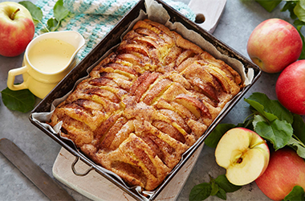
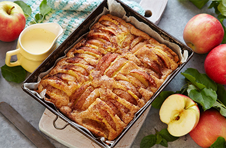

Her finner du gode og enkle desserter til bursdager og andre festligheter,
som du kjapt kan lage hjemme.
Her kan du finne både ferdiglagde desserter og mer avanserte.
Oppskriftene kommer fra kjente og populære kilder som matprat,
detsoteliv og mange fler.
Utvalget som vises er våre favoritter!
TILSLØRTE BONDEPIKER
SJOKOLADE CHIA-PUDDING
- MED SJOKOLADEMELK
EPLEKAKE
 

SJOKOLADEMOUSSE
CRÈME BRÛLÉE
KRYDDERKAKE